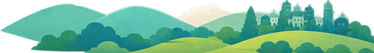
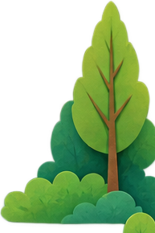
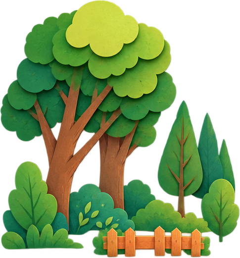
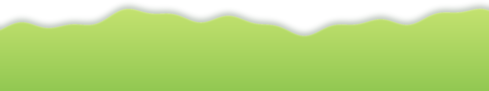
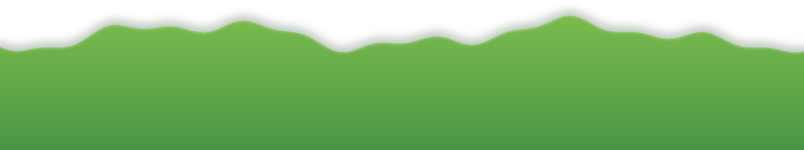
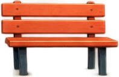
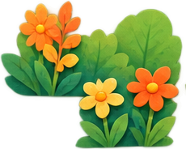
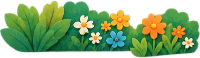
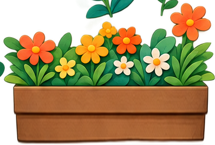
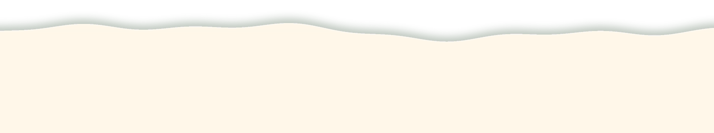
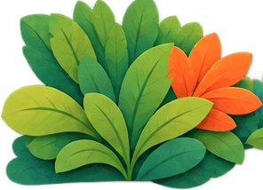
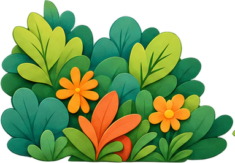
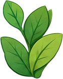
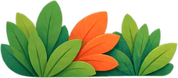
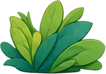
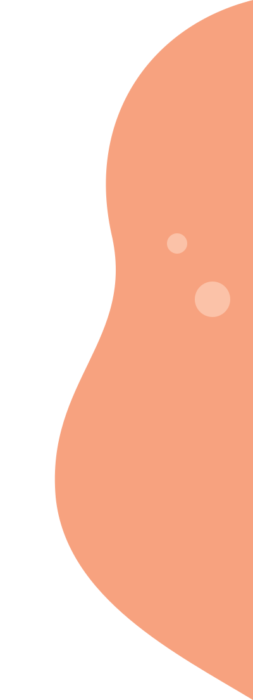
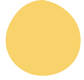
Pequenos hábitos, grandes mudanças!
JOGO DA MEMÓRIA
Encontre os pares e complete todos os desafios!
Pares encontrados: 0 / 6
Projeto de Extensão Comunitária
Juntos por uma vida mais saudável e feliz!
ODS 3 · Saúde e Bem-estar
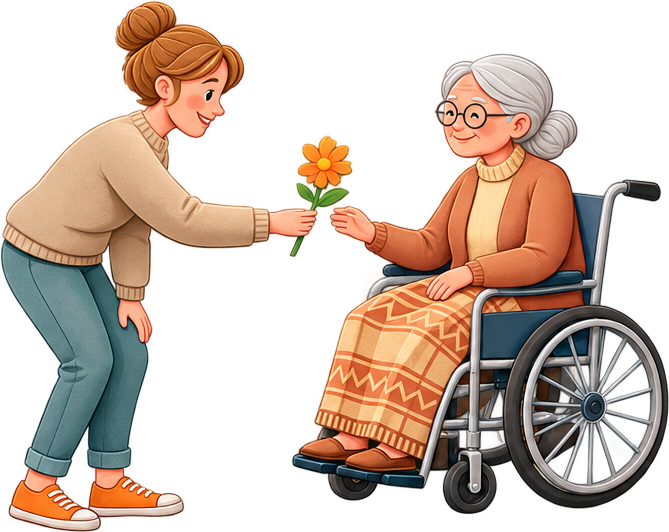
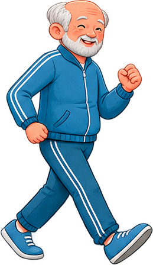
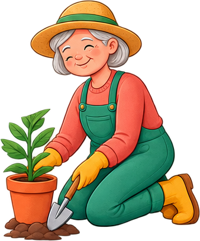